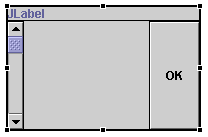
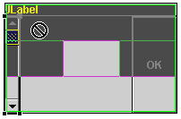
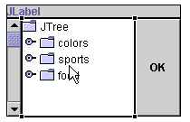

The border layout manager lays out components into regions defined by compass directions. The class java.awt.BorderLayout implements LayoutManager2, and its constraint is a string that can be of the value "North", "East", "Center", "South" or "West".
Two additional constants are used to support relative positioning based on the container's ComponentOrientation, "before line begins" and "after line ends". For example, in a container where ComponenetOrientation is ComponentOrientation.LEFT_TO_RIGHT, "Before line begins" maps to "West", and "After line ends" maps to "East". Mixing the two types of constants is not recommended. Unusual results may show in the graph viewer and runtime, since the relative constants will take precedence.
If you switch a container to BorderLayout and it has more than five components, then only the first five components are added with constraints. The remaining components will be moved from the container to the Freeform surface.

The constraints value is used as the second argument to the method add(Component,Object) that adds the components to their parent container. The code to initialize the JPanel is now:
private void initialize() {
this.setLayout(new java.awt.BorderLayout());
this.add(getJLabel(), java.awt.BorderLayout.NORTH);
this.add(getJScrollBar(), java.awt.BorderLayout.WEST);
this.add(getJButton(), java.awt.BorderLayout.EAST);
this.setSize(193, 124);
}
When the layout manager was converted from null layout to BorderLayout, the explicit bounds property setting of each component was removed. When you select a component, the property sheet no longer shows the bounds, size and location properties because they are not used to position or size the component. Instead, a constraint property is shown that has the value of the constraint. When you edit the constraint property, a relevant editor will be used for the class of the component's parent's layout manager. For BorderLayout this is a drop-down list of available constraint regions.
In addition to the constraint value using the property sheet, and the Java source view which will round trip and be reflect in the Design view, you can specify the constraint when you drop a component. To see this use the palette to select a new component such as a JTree and as you move the mouse over the JPanel it shows five rectangles representing each of the constraint regions.

The occupied regions are shown in dark grey. When you move the mouse over them, they become a 'not' symbol, indicating that you cannot drop the component because the constraint region is not available. When the cursor is over one of the available regions, either "South" or "Center" it becomes an arrow with a + indicating that the region is available. The constraint region shows the name of the region, and a light grey rectangle is drawn inside the region to indicate it is the current target region.

After releasing the mouse the button is added at the "Center" constraint. BorderLayout positions each component at one of the compass constraints along the edge with its preferred width or height as required and the "Center" component occupies all of the remaining space.

In addition to specifying the constraint when you a drop a component, you can select it and move it to a new region in the Design view. In the above example, you can drag the JScrollBar in the West region to the OK button in the East region. When you release the mouse, the components will swap with each other leaving the JScrollBar now in the East region and the OK button in the West region. You can move components to empty regions as well as ones already occupied.